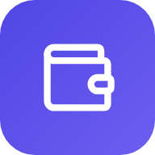

Financeiro
Sem conexão com a internet. O Financeiro precisa de internet pra funcionar.
Tentar de novo
Está demorando mais que o normal…
Abrir no navegador

Instale o Financeiro
Abra direto da tela inicial, como um app.
Instalar
×